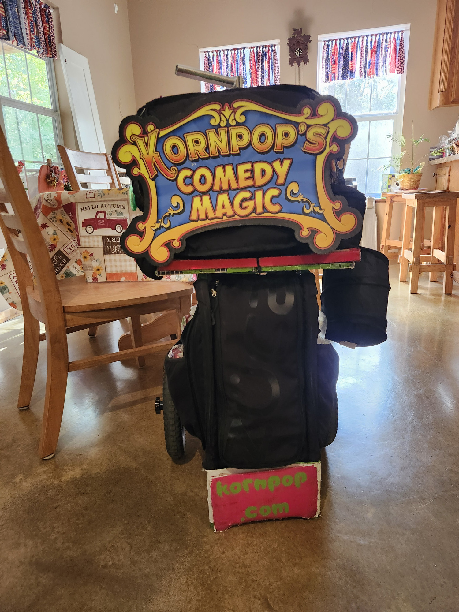
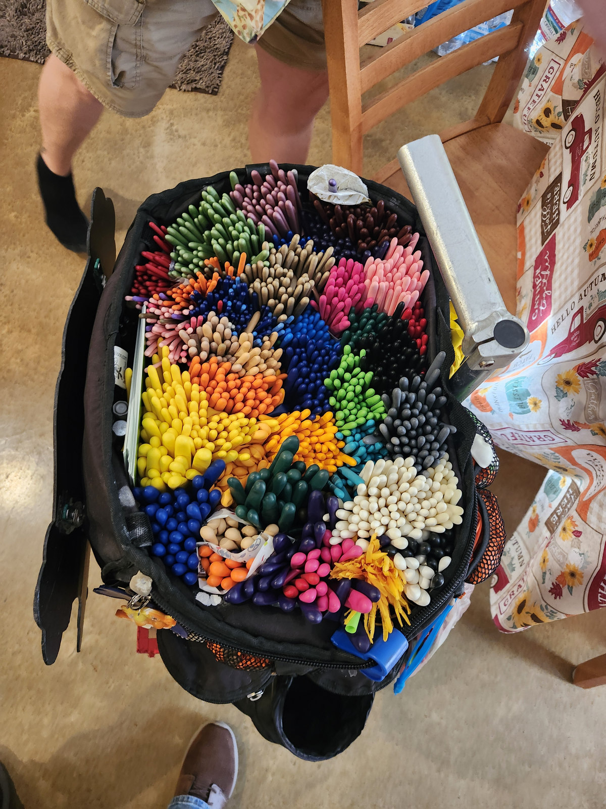
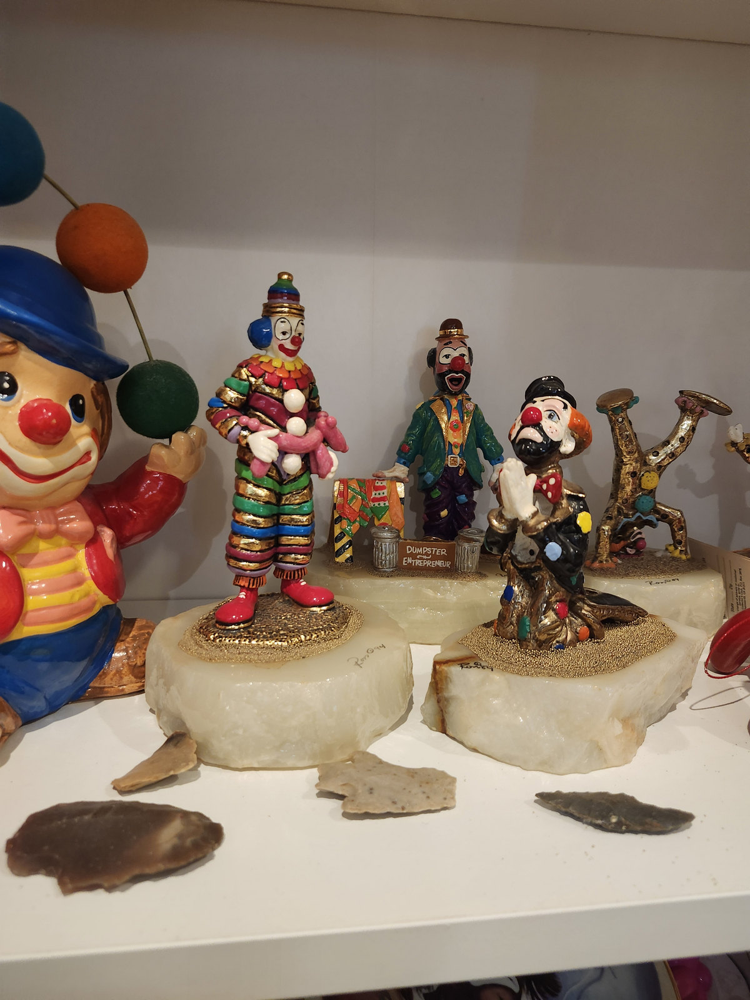
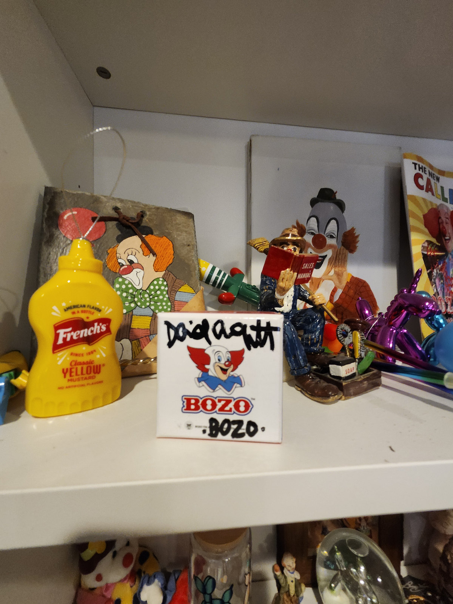

Interviews · Community · Brownsboro
From Struggles to Smiles: Meet Kornpop the Klown
Every day, his mission is to bring joy into the lives of others.

Around Brownsboro and Chandler, just about everybody knows Kornpop. Ask him how it all started and he’ll grin: “I was the class clown, always getting in trouble at school.”
He has been clowning for 55 years, 36 of them right here. When he welcomed Kickapoo Kolache into his home, he shared stories from a life spent bringing joy to others.
A name that fit from the start
Growing up in Breckenridge, near Abilene, he was given a school report to write at 12 years old. He wrote about running away with the circus. “I knew that I wanted to be a clown,” he said.
His teacher knew a retired circus clown named Popcorn. “So, he gave me the name Kornpop at 12 years old,” he said.
The name stuck for life. “I grew up knowing that I was Kornpop,” he said. About 10 years ago he made it official. “I legally changed my name to Kornpop,” he said. He made the change at the Henderson County Courthouse, and he kept his family last name, McCullough.
Thirty-six years in Brownsboro
Kornpop and his wife, Julie, moved to Hillsboro, Texas, for work and school and met there. They married about eight weeks after they met, and that was 48 years ago. After moving 16 times in 12 years, they asked her parents if they could settle on her family’s land here. As he put it: “If we’re gonna be broke, we might as well be broke on our own land.”
“I love East Texas, I love the friendliness of the people,” he said. Julie is a retired teacher who taught in Chandler for 21 years. He says she is the behind-the-scenes encourager who gives him a lot of good ideas.
Catfish for 130
When he’s not twisting balloons, Kornpop is a catfisherman on Lake Palestine in his little flat-bottom boat. He saves his catch for something special. Every July he heads back to Breckenridge for a family reunion and feeds about 130 relatives. “I catch them, clean them, and then cook them for the family reunion,” he said.
His biggest Lake Palestine catfish? A 36-pounder caught last year with a guide.

The calling: making people smile
“I really think that I was put here on earth to make people laugh, make people smile,” he said. “And that’s what I still ask God every day, just let me go out and make smiles happen.”
He keeps balloons in his pocket for exactly that reason. When he ran into a group from a Chandler dental office at lunch, one of them told him it was a coworker’s birthday. He made her a balloon hat on the spot, pulled out his kazoo, and got everyone singing “Happy Birthday.”
Balloons are his biggest specialty. He and a friend learned from a balloon book, then started inventing their own designs. Today he teaches other balloon twisters and clowns. He credits the clown who taught him to walk on stilts, Toby Twist, a Ringling Brothers clown, for the motto he still lives by: “If I teach somebody something, and they get as good as I am, then I have to get better.”
His son, Josh, is now part of the business as a balloon twister and decorator. Together they build balloon arches, columns and giant sculptures, including a 12-foot Winnie the Pooh for a festival in Abilene.
A smile given back
His favorite story comes from a trip to China, where he performed in a village damaged by an earthquake. He picked a 7-year-old girl from the crowd to help with a trick and made her a balloon princess crown. By the end of the show she was laughing and giggling. Afterward, the mayor told him the little girl was the only survivor from her classroom and had not talked or smiled since the earthquake two months earlier.
“I said, no sir, I did not give her smile back. God gave her her smile back. He just used a clown to do it,” Kornpop said.
From Struggle to a Smile
The joy Kornpop shares today was hard-won, and he is quick to say where it came from. Early in his marriage, life took a hard turn. “After I got married and everything, I became an alcoholic,” he said. While he was running a construction company in Phoenix, he lost the business, and he says he “almost lost my family because of alcohol and drugs.”
“And I finally said we’ve got to go back home,” he said. The family returned to East Texas, where he got his old job back.
One day while he was mowing the yard, a local Nazarene pastor walked by and asked if he had any coffee. The two visited, the pastor invited the family to church, and that next Sunday night everything changed. “The Holy Spirit grabbed me and I went down to the altar and gave my life to Jesus,” Kornpop said.
He went home and poured out the alcohol. “And have never wanted a drink since, and that’s been almost 40 years now,” he said.
All the Glory to Jesus
Through it all, he says, his family held together. “I got to keep my family through it all,” he said. The change rippled outward too. Years later his father came to faith, and Kornpop had the joy of baptizing his own dad at about 72 years old. “And it turned my whole family around,” he said.
That is why he gives all the credit for the smiles he creates to Jesus, just as he did for the little girl in China.
Today he is an ordained non-denominational minister. He shares the gospel at churches with illusions, balloons and tricks, and he attends Rock Hill. With a friend from church, Debbie, he films “Kornpop Presents,” a series of Bible stories for kids, each paired with a balloon creation. More than 45 episodes are posted on Facebook and YouTube.

A home full of clowns
Step inside Kornpop’s home and the shelves are filled with clowns. His collection includes Ron Lee sculptures. He received his very first one from a mom while he and Julie were teaching Sunday school kids to be “clowns for Christ” in Arcadia, Louisiana. Also on display is a wood carving of him, made by a carver who watched him entertain at Little Wranglers, a children’s cancer event where he has performed for 25 years.
Another treasure is a clown nose signed by Dave Arquette, who now holds the rights to Bozo the Clown. Kornpop got to help teach him at a clown convention.

Generations of birthdays
Kornpop does five or six birthday parties a month, and families keep calling him back. He once surprised a dad for his 50th birthday, years after entertaining at his daughters' parties. Last year he did a little girl’s 10th birthday after doing her mom’s 10th years before. “I’ve been clowning for 55 years, but yeah in this area for 36 years,” he said.